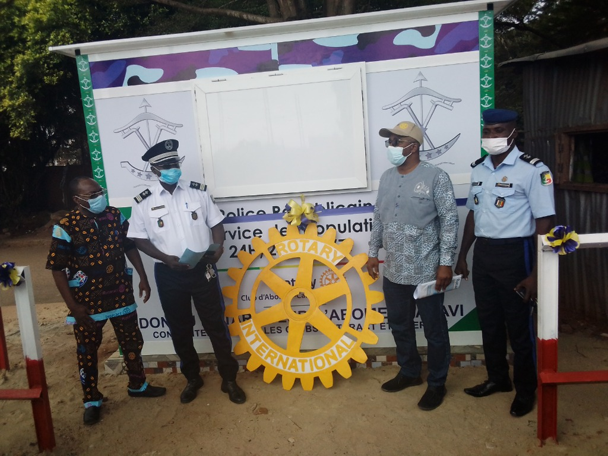
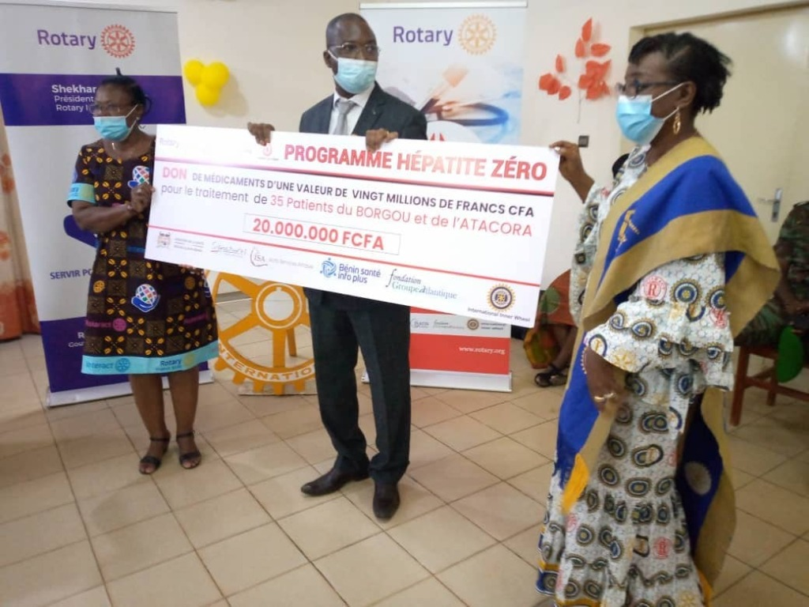
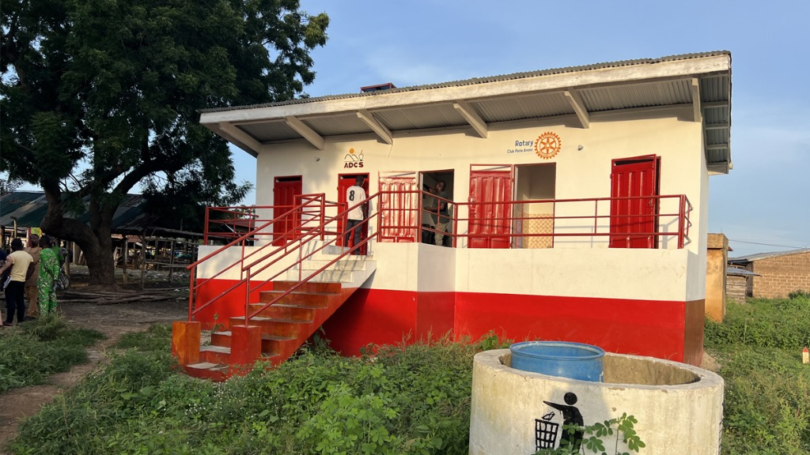
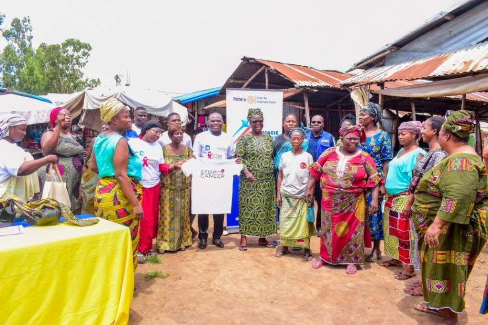
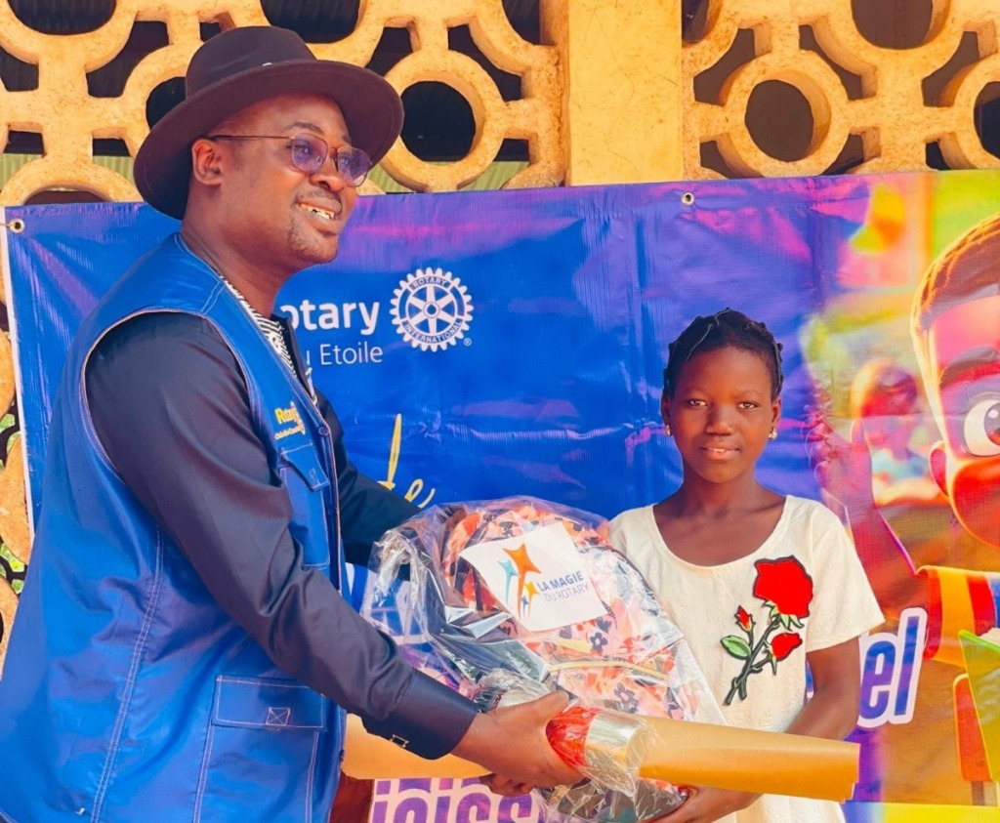
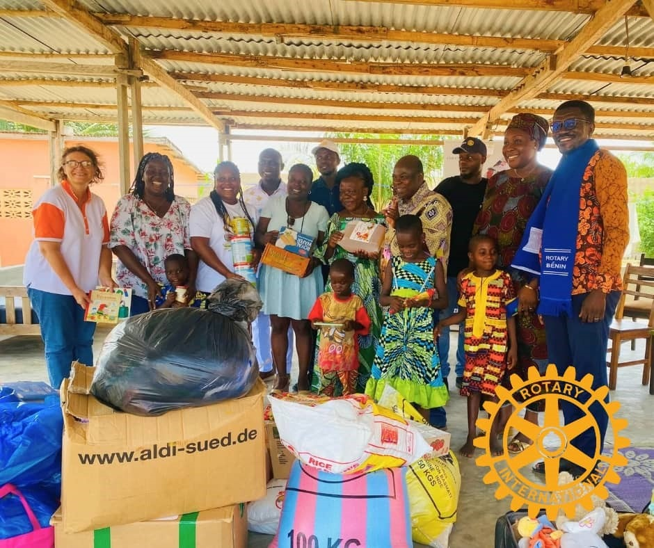
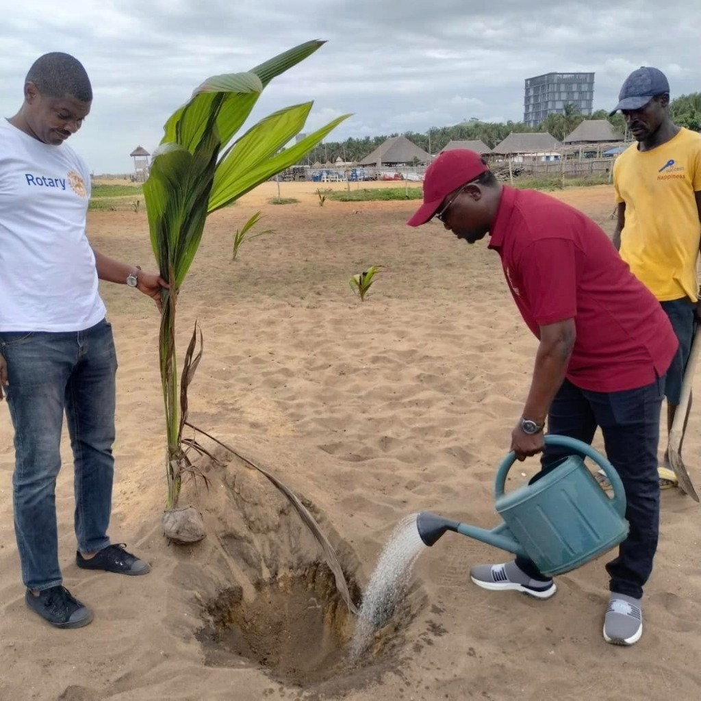
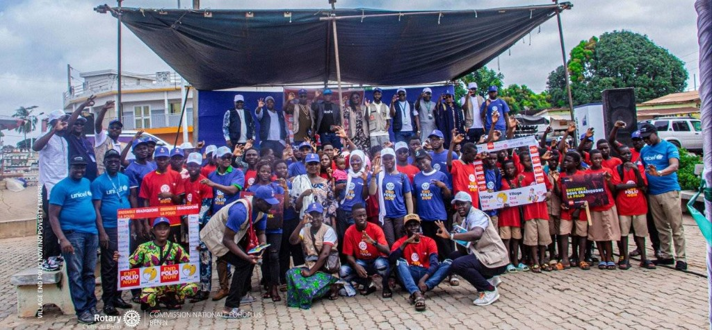

Qui sommes-nous ?
Le Comité de Liaison Inter Clubs (CLIC) Rotary Bénin est un cadre de concertation et de
collaboration entre les Rotary clubs du Bénin.
Il œuvre pour le renforcement de la synergie interclubs, la coordination des actions communes et
la promotion des valeurs du Rotary International.

Nos causes

Promotion de la Paix
Le Rotary agit pour prévenir les conflits, encourager le dialogue et bâtir une paix durable au sein des communautés et entre les nations.

Lutte contre les maladies
Nous soutenons la prévention, le traitement et le renforcement des systèmes de santé pour réduire les maladies et sauver des vies.

Accès à l'eau, à l'assainissement et à l'hygiène
Le Rotary œuvre pour garantir à tous l'accès à une eau potable sûre, à l'assainissement et à de bonnes pratiques d'hygiène.

Santé de la mère et de l'enfant
Nous protégeons les mères et les enfants en améliorant l'accès aux soins, à la nutrition et à des services de santé de qualité.

Éducation de base et alphabétisation
Le Rotary soutient l’éducation pour tous, renforce l’alphabétisation et accompagne les apprenants vers un avenir meilleur.

Développement économique et local
Nous favorisons l'autonomisation des communautés par l'entrepreneuriat, l'emploi et des initiatives économiques durables.

Protection de l’environnement
Le Rotary s’engage à préserver la planète à travers des actions concrètes contre le changement climatique et pour la protection des ressources naturelles.

En finir avec la Polio
Le Rotary mène un combat historique pour éradiquer définitivement la poliomyélite et offrir à chaque enfant un avenir sans cette maladie.
Le Rotary International
Le Rotary International est un réseau mondial de leaders engagés dans le service à autrui, la promotion de la paix et le développement durable des communautés.
En savoir plus sur le RotaryEnvie de rejoindre un club Rotary ?
Découvrez les clubs Rotary près de chez vous et engagez-vous au service de votre communauté.
Trouver un club